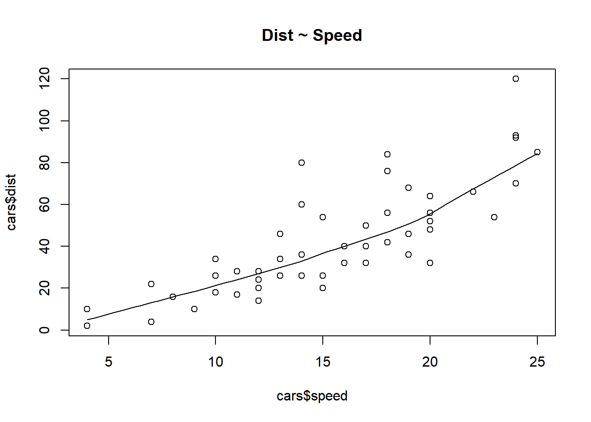
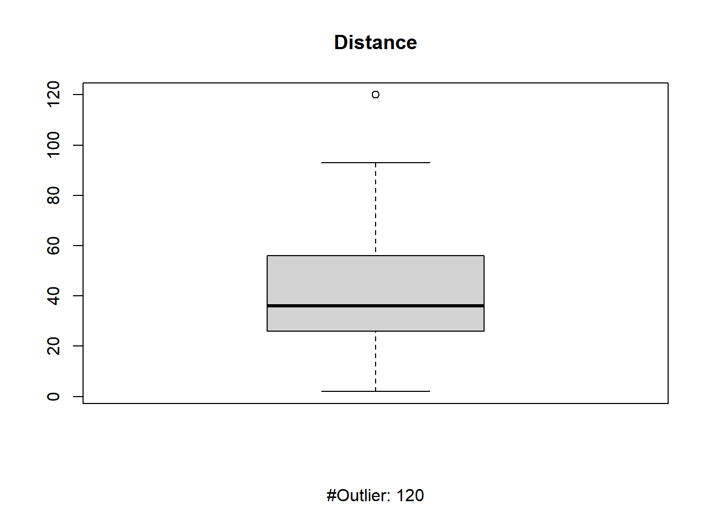
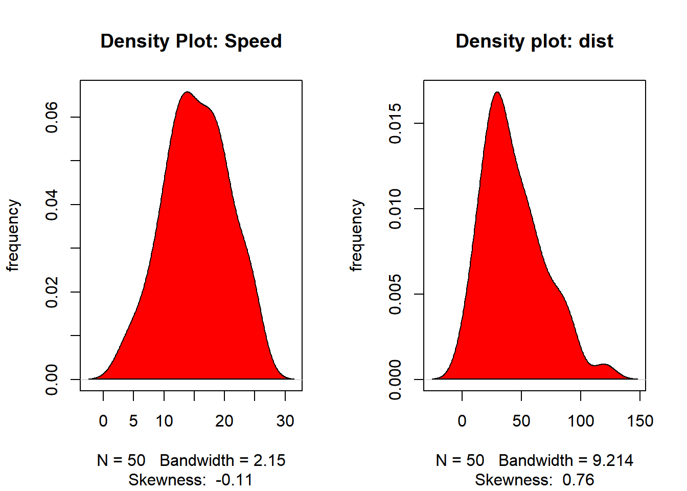
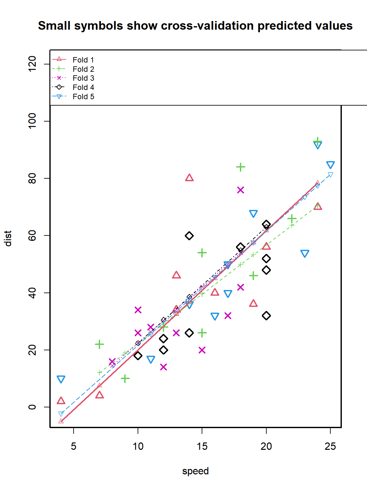

head(cars) speed dist
1 4 2
2 4 10
3 7 4
4 7 22
5 8 16
6 9 10DISCLAIMER: This content is copied from this post by r-statistics.co
head(cars) speed dist
1 4 2
2 4 10
3 7 4
4 7 22
5 8 16
6 9 10# scatter plot for checking pattern
scatter.smooth(x = cars$speed, y = cars$dist, main = "Dist ~ Speed")
# boxplot - check for outliers
boxplot(cars$dist, main = "Distance", sub = paste("#Outlier:", boxplot.stats(cars$dist)$out))
# density plot to check if the response variable is close to normality
par(mfrow = c(1, 2))
plot(density(cars$speed), main = "Density Plot: Speed", ylab = "frequency",
sub = paste("Skewness: ", round(e1071::skewness(cars$speed), 2)))
polygon(density(cars$speed), col = "red")
plot(density(cars$dist), main = "Density plot: dist", ylab = "frequency",
sub = paste("Skewness: ", round(e1071::skewness(cars$dist), 2)))
polygon(density(cars$dist), col = "red")
cor(cars$speed, cars$dist)[1] 0.8068949linearMod <- lm(dist ~ speed, data = cars)
summary(linearMod)
Call:
lm(formula = dist ~ speed, data = cars)
Residuals:
Min 1Q Median 3Q Max
-29.069 -9.525 -2.272 9.215 43.201
Coefficients:
Estimate Std. Error t value Pr(>|t|)
(Intercept) -17.5791 6.7584 -2.601 0.0123 *
speed 3.9324 0.4155 9.464 1.49e-12 ***
---
Signif. codes: 0 '***' 0.001 '**' 0.01 '*' 0.05 '.' 0.1 ' ' 1
Residual standard error: 15.38 on 48 degrees of freedom
Multiple R-squared: 0.6511, Adjusted R-squared: 0.6438
F-statistic: 89.57 on 1 and 48 DF, p-value: 1.49e-12modelSummary <- summary(linearMod)
modelSummary
Call:
lm(formula = dist ~ speed, data = cars)
Residuals:
Min 1Q Median 3Q Max
-29.069 -9.525 -2.272 9.215 43.201
Coefficients:
Estimate Std. Error t value Pr(>|t|)
(Intercept) -17.5791 6.7584 -2.601 0.0123 *
speed 3.9324 0.4155 9.464 1.49e-12 ***
---
Signif. codes: 0 '***' 0.001 '**' 0.01 '*' 0.05 '.' 0.1 ' ' 1
Residual standard error: 15.38 on 48 degrees of freedom
Multiple R-squared: 0.6511, Adjusted R-squared: 0.6438
F-statistic: 89.57 on 1 and 48 DF, p-value: 1.49e-12modelCoeffs <- modelSummary$coefficients
modelCoeffs Estimate Std. Error t value Pr(>|t|)
(Intercept) -17.579095 6.7584402 -2.601058 1.231882e-02
speed 3.932409 0.4155128 9.463990 1.489836e-12beta_estimate <- modelCoeffs["speed", "Estimate"]
beta_estimate [1] 3.932409std_error <- modelCoeffs["speed", "Std. Error"]
std_error[1] 0.4155128t_value <- beta_estimate / std_error
t_value[1] 9.46399# p_value <- 2 * pt(abs(t_value), df = nrow(cars) - ncol(cars), lower.tail = FALSE)
p_value <- 2 * pt(-abs(t_value), df = nrow(cars) - ncol(cars))
p_value[1] 1.489836e-12f <- modelSummary$fstatistic
f value numdf dendf
89.56711 1.00000 48.00000 fstatistic <- f[1]
fstatistic value
89.56711 pf(f[1], f[2], f[3], lower.tail = FALSE) value
1.489836e-12 AIC(linearMod)[1] 419.1569BIC(linearMod)[1] 424.8929set.seed(100)
train_idx <- sample(1:nrow(cars), floor(0.8*nrow(cars)))
train_df <- cars[train_idx, ]
test_df <- cars[-train_idx, ]lmMod <- lm(dist ~ speed, data = train_df)
distPred <- predict(lmMod, test_df)
summary(lmMod)
Call:
lm(formula = dist ~ speed, data = train_df)
Residuals:
Min 1Q Median 3Q Max
-24.726 -11.242 -2.564 10.436 40.565
Coefficients:
Estimate Std. Error t value Pr(>|t|)
(Intercept) -20.1796 7.8254 -2.579 0.0139 *
speed 4.2582 0.4947 8.608 1.85e-10 ***
---
Signif. codes: 0 '***' 0.001 '**' 0.01 '*' 0.05 '.' 0.1 ' ' 1
Residual standard error: 15.49 on 38 degrees of freedom
Multiple R-squared: 0.661, Adjusted R-squared: 0.6521
F-statistic: 74.11 on 1 and 38 DF, p-value: 1.848e-10actual_preds <- data.frame(actuals = test_df$dist, predicted = distPred)
head(actual_preds) actuals predicted
3 4 9.627845
5 16 13.886057
17 34 35.177120
24 20 43.693545
28 40 47.951757
32 42 56.468182correlation_acc <- cor(actual_preds)\[ \text{Min Max Accuarcy} = mean\left(\frac{min(actuals, predicteds)}{max(actuals, predicteds)}\right) \]
\[ \text{MAPE} = mean\left(\frac{abs(predicteds - actuals)}{actuals}\right) \]
min_max_accuracy <- mean(apply(actual_preds, 1, min) /
apply(actual_preds, 1, max))
min_max_accuracy[1] 0.7311131mape <- mean(abs(actual_preds$predicted - actual_preds$actuals) / actual_preds$actuals)
mape[1] 0.4959096library(DAAG)
cvResults <- CVlm(data = cars, form.lm = dist ~ speed, dots = FALSE, seed = 29,
m = 5, printit = TRUE, legend.pos = "topleft")
fold 1
Observations in test set: 10
1 3 17 18 19 23 28
speed 4.000000 7.00000 13.000000 13.000000 13.00000 14.00000 16.000000
cvpred -5.055642 7.46615 32.509735 32.509735 32.50974 36.68367 45.031528
dist 2.000000 4.00000 34.000000 34.000000 46.00000 80.00000 40.000000
CV residual 7.055642 -3.46615 1.490265 1.490265 13.49026 43.31633 -5.031528
36 42 46
speed 19.00000 20.000000 24.000000
cvpred 57.55332 61.727251 78.422974
dist 36.00000 56.000000 70.000000
CV residual -21.55332 -5.727251 -8.422974
Sum of squares = 2718.14 Mean square = 271.81 n = 10
fold 2
Observations in test set: 10
4 6 15 25 26 35 37
speed 7.000000 9.000000 12.000000 15.00000 15.00000 18.00000 19.000000
cvpred 12.045042 18.926262 29.248093 39.56992 39.56992 49.89175 53.332365
dist 22.000000 10.000000 28.000000 26.00000 54.00000 84.00000 46.000000
CV residual 9.954958 -8.926262 -1.248093 -13.56992 14.43008 34.10825 -7.332365
44 48 49
speed 22.000000 24.00000 24.00000
cvpred 63.654195 70.53542 70.53542
dist 66.000000 93.00000 120.00000
CV residual 2.345805 22.46458 49.46458
Sum of squares = 4746.75 Mean square = 474.67 n = 10
fold 3
Observations in test set: 10
5 8 9 11 12 16 24
speed 8.000000 10.000000 10.00000 11.000000 12.0000 13.000000 15.00000
cvpred 14.500881 22.393741 22.39374 26.340171 30.2866 34.233031 42.12589
dist 16.000000 26.000000 34.00000 28.000000 14.0000 26.000000 20.00000
CV residual 1.499119 3.606259 11.60626 1.659829 -16.2866 -8.233031 -22.12589
29 32 34
speed 17.00000 18.00000 18.00000
cvpred 50.01875 53.96518 53.96518
dist 32.00000 42.00000 76.00000
CV residual -18.01875 -11.96518 22.03482
Sum of squares = 1928.68 Mean square = 192.87 n = 10
fold 4
Observations in test set: 10
7 13 14 20 22 33 39
speed 10.000000 12.00000 12.000000 14.0000 14.0000 18.000000 20.00000
cvpred 22.365043 30.50217 30.502169 38.6393 38.6393 54.913549 63.05068
dist 18.000000 20.00000 24.000000 26.0000 60.0000 56.000000 32.00000
CV residual -4.365043 -10.50217 -6.502169 -12.6393 21.3607 1.086451 -31.05068
40 41 43
speed 20.00000 20.00000 20.0000000
cvpred 63.05068 63.05068 63.0506754
dist 48.00000 52.00000 64.0000000
CV residual -15.05068 -11.05068 0.9493246
Sum of squares = 2102.53 Mean square = 210.25 n = 10
fold 5
Observations in test set: 10
2 10 21 27 30 31
speed 4.000000 11.000000 14.000000 16.0000 17.000000 17.0000000
cvpred -2.227577 25.678608 37.638402 45.6116 49.598196 49.5981959
dist 10.000000 17.000000 36.000000 32.0000 40.000000 50.0000000
CV residual 12.227577 -8.678608 -1.638402 -13.6116 -9.598196 0.4018041
38 45 47 50
speed 19.00000 23.00000 24.00000 25.000000
cvpred 57.57139 73.51778 77.50438 81.490979
dist 68.00000 54.00000 92.00000 85.000000
CV residual 10.42861 -19.51778 14.49562 3.509021
Sum of squares = 1217.21 Mean square = 121.72 n = 10
Overall (Sum over all 10 folds)
ms
254.2661 attr(cvResults, 'ms')[1] 254.2661caretlibrary(caret)
set.seed(100)
train_index <- createDataPartition(cars$dist, p = 0.8, list = FALSE)
train_data <- cars[train_index, ]
test_data <- cars[-train_index, ]control <- trainControl(method = "cv", number = 5)
metric <- "RMSE"# linear model
fit_lm <- train(dist ~ speed, data = train_data, method = "lm",
metric = metric, trControl = control)
print(fit_lm)Linear Regression
41 samples
1 predictor
No pre-processing
Resampling: Cross-Validated (5 fold)
Summary of sample sizes: 33, 33, 33, 32, 33
Resampling results:
RMSE Rsquared MAE
14.88521 0.7186643 11.50873
Tuning parameter 'intercept' was held constant at a value of TRUEcaret_pred <- predict(fit_lm, test_data)
actual_preds_caret <- data.frame(actual = test_data$dist, pred = caret_pred)
head(actual_preds_caret) actual pred
1 2 -5.63837
5 16 11.35053
9 34 19.84498
13 20 28.33942
22 60 36.83387
34 76 53.82277postResample(pred = caret_pred, obs = test_data$dist) RMSE Rsquared MAE
16.3821667 0.5901666 14.8413055